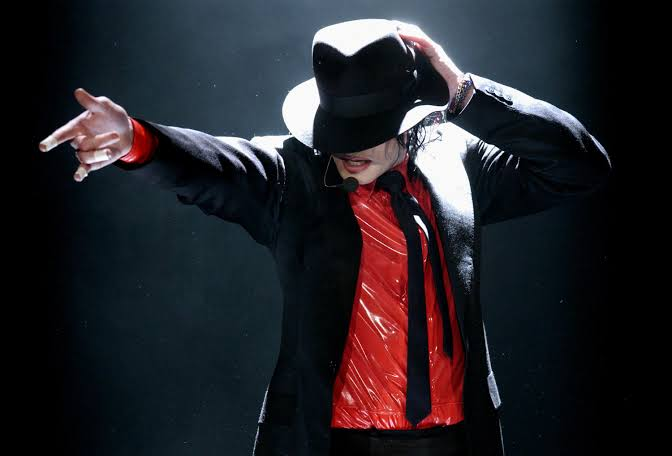
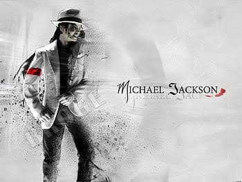

Michael Joseph Jackson (August 29, 1958 – June 25, 2009) was an American singer, songwriter, dancer, and philanthropist. Known as the "King of Pop", he is regarded as one of the most significant cultural figures of the 20th century. During his four-decade career, his contributions to music, dance, and fashion, along with his publicized personal life, made him a global figure in popular culture. Jackson influenced artists across many music genres. Through stage and video performances, he popularized complicated street dance moves such as the moonwalk, which he named, as well as the robot.
The eighth child of the Jackson family, Jackson made his public debut in 1964 with his older brothers Jackie, Tito, Jermaine, and Marlon as a member of the Jackson 5 (later known as the Jacksons). Jackson began his solo career in 1971 while at Motown Records. He became a solo star with his 1979 album Off the Wall. His music videos, including those for "Beat It", "Billie Jean", and "Thriller" from his 1982 album Thriller, are credited with breaking racial barriers and transforming the medium into an art form and promotional tool. He helped propel the success of MTV and continued to innovate with videos for the albums Bad (1987), Dangerous (1991), HIStory: Past, Present and Future, Book I (1995), and Invincible (2001). Thriller became the best-selling album of all time, while Bad was the first album to produce five US Billboard Hot 100 number-one singles.
From the late 1980s, Jackson became a figure of controversy and speculation due to his changing appearance, relationships, behavior, and lifestyle. In 1993, he was accused of sexually abusing the child of a family friend. The lawsuit was settled out of civil court; Jackson was not indicted due to lack of evidence. In 2005, he was tried and acquitted of further child sexual abuse allegations and several other charges. The FBI found no evidence of criminal conduct by Jackson in either case. In 2009, while he was preparing for a series of comeback concerts, This Is It, Jackson died from an overdose of propofol administered by his personal physician, Conrad Murray, who was convicted in 2011 of involuntary manslaughter for his involvement in Jackson's death. His death triggered reactions around the world, creating unprecedented surges of internet traffic and a spike in sales of his music. Jackson's televised memorial service, held at the Staples Center in Los Angeles, was estimated to have been viewed by more than 2.5 billion people.
Jackson is one of the best-selling music artists of all time, with estimated sales of over 400 million records worldwide. He had 13 Billboard Hot 100 number-one singles (fourth highest of any artist in the Hot 100 era) and was the first artist to have a top-ten single on the Billboard Hot 100 in five different decades. His honors include 15 Grammy Awards, six Brit Awards, a Golden Globe Award, and 39 Guinness World Records, including the "Most Successful Entertainer of All Time". Jackson's inductions include the Rock and Roll Hall of Fame (twice), the Vocal Group Hall of Fame, the Songwriters Hall of Fame, the Dance Hall of Fame (making him the only recording artist to be inducted) and the Rhythm and Blues Music Hall of Fame.